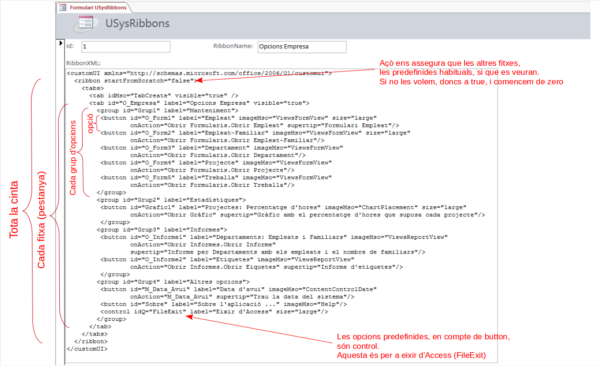

4.2.2 Modificació per a la Base de Dades actual
Com es comentava al principi d'aquesta Part IV, resulta més complicat modificar la cinta d'opcions de manera que afecte només a la Base de Dades actual.
La manera de definir la cinta canvia radicalment de com es creaven en versions anteriors a Access 2007, les barres i els menús. Ara es definirà en XML. Aquest codi XML pot estar guardat en més d'un lloc, definir-lo de més d'una manera. Nosaltres veurem possiblement el lloc més senzill per a col·locar aquest codi XML que definirà la cinta d'opcions. Serà col·locar-la en una taula especial, amb una estructura predeterminada. No intentarem fer un estudi exhaustiu. Ens aconformarem en veure un exemple, i sobre aquest exemple com es podria modificar el codi XML per a modificar la cinta d'opcions.
Nota
Al final de la pregunta hi ha un vídeo on es mostra tot el procés
Primer pas: Preparació
Per a poder visulitzar totes les taules, i poder visualitzar possible errors en el moment de crear la cinta d'opcions farem dues preparacions inicials:
1.- Visualitzar les taules de sistema
Són taules que utilitza el mateix Access, i per defecte estan ocultes per a no marejar, però ara ens farà falta tenir-les visibles.
Es fa amb el botó de la dreta en l'explorador d'objectes, anant a les Opciones de navegación, i activant Mostrar objetos del sistema
2.- Habilitar la presentació dels missatges d'error
Si quan posem el codi XML hi ha alguna cosa malament ens anirà molt bé que ens mostre quin és l'error. Podem fer que els mostre d'aquesta manera:
Anar al menú ARCHIVO, i després anar a les Opciones. En Configuración de cliente, en l'apartat General haurem d'activar l'opció Mostrar errores de interfaz de usuario en el complemento
Segon pas: Crear la taula del sistema USysRibbons
En la taula USysRibbon és on guardarem el codi XML. Obligatòriament ha de tenir la següent estructura:
| Nom del camp |
Tipus | Grandària |
| ID | Autonumèric | Enter llarg |
| RibbonName | Texto | 255 |
| RibbonXml | Memo |
Nota
Podeu importar la taula, juntament amb un formulari per a poder visualitzar-la (i modificar-la) còmodament, des de la base de dades adjunta ribbon.accdb
Cada fila que introduïm en la taula USysRibbons serà una cinta d'opcions que podrem associar a la nostra aplicació. En RibbonName posarem el nom de la cinta, i en RibbonXml les diferents opcions de la cinta en format XML. Mirem aquest exemple, que és el que teniu en la Base de Dades ribbon.accdb.

Com es pot apreciar , té una estructura jeràrquica, per anar definint la cinta (ribbon), les fitxes (tab), els grups (group) i les opcions individuals (button). Els elements tindran un camp per a identificar-los (id) i en moltes ocasions una etiqueta (label) que és la que es mostrarà en la cinta.
Concretament l'element button, que defineix les diferents opcions individuals, té entre d'altres els següents camps:
-
- id: identificador que no ha de coincidir amb cap altre.
-
- label: etiqueta que es mostrarà en la cinta
-
- imageMSO: image de la icona d'entre les ja definides que s'associarà a l'opció. Definir una imatge pròpia suposa massa esforç per als objectius d'aquest tema.
-
- size: grandària de la icona, que potser gran (large) o menuda (normal).
-
- onAction: nom de la macro que s'executarà en apretar el botó.
-
- supertip: missatge emergent que eixirà quan ens situem damunt del botó.
Tercer pas: Activar-la
Una vegada creada la taula (que per cert, si ocultem els objectes de sistema també s'amagarà), per a posar-la visible en la nostra aplicació basada en Access, haurem de reiniciar Access o com a mínim la Base de Dades, per a que tinguen efecte els canvis. Aquestos seran els pasos:
-
Tancar la Base de Dades i tornar a obrir-la.
-
Anar a les Opcions d'Access (botó principal d'Office -> Opcions d'Access), concretament a les opcions de Base de datos actual
-
En l'apartat de Opciones de barra de herramientas y de la cinta de opciones l'opció Nombre de banda de opciones és un quadre combinat on ja podrem triar la nostra cinta.
-
Tancar una altra vegada la Base de Dades i tornar a obrir-la.
Per a cada canvi que fem en la cinta (editant la taula USysRibbons) haurem de tancar la BD i tornar a obrir-la, ja que és en aquest moment quan es configura la cinta d'opcions.
En el cas de tenir alguna errada en el codi XML, en el moment d'obrir la Base de Dades ens ho comunicarà.
Resum de tots els passos
En el següent vídeo es realitzen tots els pasos anteriors.
Llicenciat sota la Llicència Creative Commons Reconeixement NoComercial SenseObraDerivada 2.5